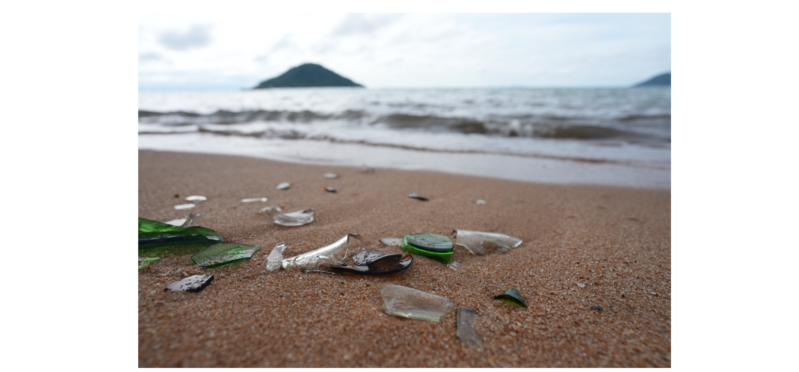

Solar-Powered Glass Tumbler for Cape Maclear, Malawi
Design, Maintenance, Operation, and Results
Contributors
- Emma Steinke —
 0009-0005-9115-9379 — design, construction, testing, writing
0009-0005-9115-9379 — design, construction, testing, writing - Jakub Tkaczuk — 0000-0001-7997-9423 — supervision, page development & maintenance
- Elizabeth Tilley — 0000-0002-2095-9724 — supervision
This repository details the construction, operation, and maintenance of the glass crusher built as part of a collaboration between the Malawian nonprofit organization, Sustainable Cape Maclear, and the Global Health Engineering Group at ETH Zürich.
1 Introduction
Cape Maclear is a rural Malawian town located within a UNESCO World Heritage Site, which has attracted a lot of tourism and growth in the last 20 years. This has led to a unique waste challenge: an abundance of non-returnable glass bottles that are not part of a deposit system. As shown in Figure 1, this broken glass creates sharp fragments that pose significant injury risks to residents, tourists, and wildlife.

Because industrial recycling is not economically or technically feasible in this location, this project utilizes glass tumbling to grind away sharp edges. This process produces smooth “sea glass,” which is safe for reuse in construction, landscaping, and jewelry. The transformation from sharp fragments to smooth glass is illustrated in Figure 2.

2 Tumbler Overview
The machine is a standalone, solar-powered rotating drum system designed to process batches of glass. An overview of the full assembly can be seen in Figure 3.

The system operates through five core stages: 1. Solar Harvesting: A 260W solar panel generates DC electricity from sunlight. 2. Power Regulation: An electronics box containing a DC-DC converter and PWM motor controller stabilizes the variable solar voltage to a consistent 24V. 3. Mechanical Drive: A 350W 24V DC motor converts electrical energy into rotational motion. 4. Power Transmission: A bicycle chain and sprocket system transmits torque to a shaft attached to the rear of the drum. 5. Rotating Drum: A 19kg LPG cylinder serves as the tumbling vessel.
2.1 Key Specifications
- Capacity: The drum has a volume of 38.5 l and can processes 20kg of glass per batch (typically requiring 8–10 hours of tumbling for the best finish). It operates with the drum being around half-full.
- Operating Speed: The drum is typically run at 40 RPM but can reach speeds up to 52 RPM.
- Direct Solar (Battery-Free) Design: The system operates without a battery buffer, making the motor’s performance directly dependent on real-time solar irradiance. When sunlight is abundant, the tumbler maintains its preset operating speed. If irradiance drops—due to cloud cover, panel shading, or a suboptimal angle of inclination—the system slows down accordingly.
3 Part List
The total cost to manufacture the system is approximately $581.10. A detailed breakdown of the components, specifications, and procurement origins is provided in the table below.
| Item | Specification | Origin | Qty | Unit (\() | Total (\)) | |
|---|---|---|---|---|---|
| Drivetrain | 56.50 | ||||
| DC Motor | 350 W | CH | 1 | 48.00 | 48.00 |
| Sprocket | Bicycle 410, 48T | MW | 1 | 5.30 | 5.30 |
| Chain | 1/2” x 1/8” x 114L | MW | 1 | 3.20 | 3.20 |
| Electronics | 123.00 | ||||
| DC-DC Converter | 50 A, 1000 W | CH | 1 | 41.00 | 41.00 |
| PWM Controller | 10 – 55 V | CH | 1 | 22.00 | 22.00 |
| Circuit Breakers | 25 A | CH | 3 | 9.00 | 27.00 |
| Ring Ferrules | 3, 4, 5 mm ID | CH | 20 | 0.13 | 2.50 |
| Fuses | 10 A | CH | 2 | 0.25 | 0.50 |
| Tachometer | Model BC 120 | CH | 1 | 20.00 | 20.00 |
| Volt/Amp Meter | 0–100V, 50A | CH | 2 | 5.00 | 10.00 |
| Finishing | 85.10 | ||||
| Enclosure | 350x250x200 mm | MW | 1 | 6.70 | 6.70 |
| Motor Cover | 460x350x250 mm | MW | 1 | 6.60 | 6.60 |
| Lid Seal | 10 x 12 mm | CH | 1 | 16.00 | 16.00 |
| Surface Treat. | 2K Paint/Red Oxide | MW | 1 | 55.80 | 55.80 |
| Housing | 222.80 | ||||
| Gas Cylinder | 19 kg (300mm ID) | MW | 1 | 78.90 | 78.90 |
| Steel Beam (L) | 80x40x2mm (6m) | MW | 1 | 44.50 | 44.50 |
| Steel Beam (S) | 30x30x2mm (6m) | MW | 1 | 23.70 | 23.70 |
| Steel Sheet | 460x200x5mm | MW | 1 | 9.20 | 9.20 |
| Bearings | 25 mm ID | CH | 1 | 0.00 | 0.00 |
| Shaft | 25 mm OD | CH | 1 | 0.00 | 0.00 |
| Steel Offcuts | Various Dimensions | MW | 1 | 8.90 | 8.90 |
| Castor Wheels | Ø 100 mm | MW | 2 | 2.10 | 4.20 |
| Small Wheel | 50 x 19 mm | CH | 1 | 4.00 | 4.00 |
| Toggle Clamp | 150 kg Capacity | CH | 4 | 5.00 | 20.00 |
| Lid Metal | 400x400x3mm | MW | 1 | 7.90 | 7.90 |
| Fasteners | M6, M8, M10 | MW | 1 | 10.30 | 10.30 |
| Welding Rods | Ø 2.5 mm | MW | 1 | 11.20 | 11.20 |
| Solar PV | 93.70 | ||||
| Solar Panel | 260 W | MW | 1 | 69.70 | 69.70 |
| Connectors | MC4 Standard | CH | 6 | 4.00 | 24.00 |
| GRAND TOTAL | $581.10 |
COO Key: MW = Malawi (Local Procurement), CH = Switzerland (Imported)